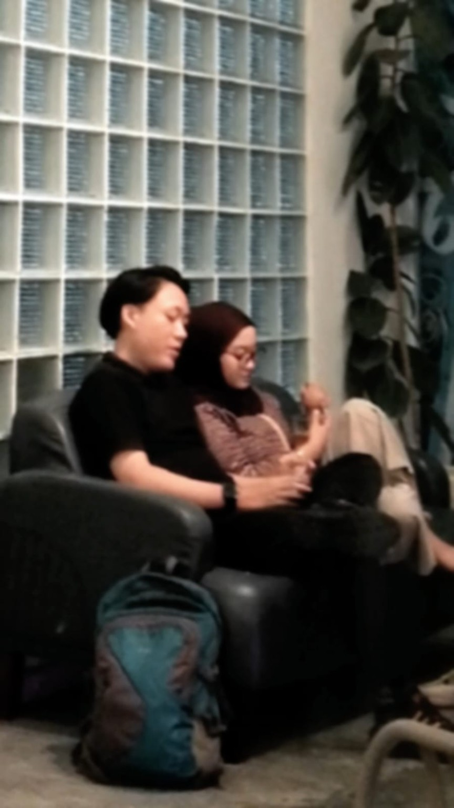
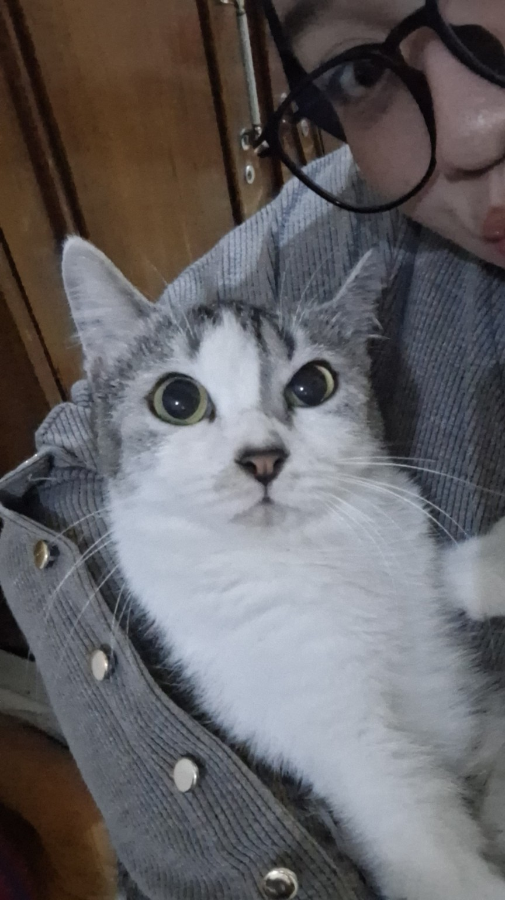
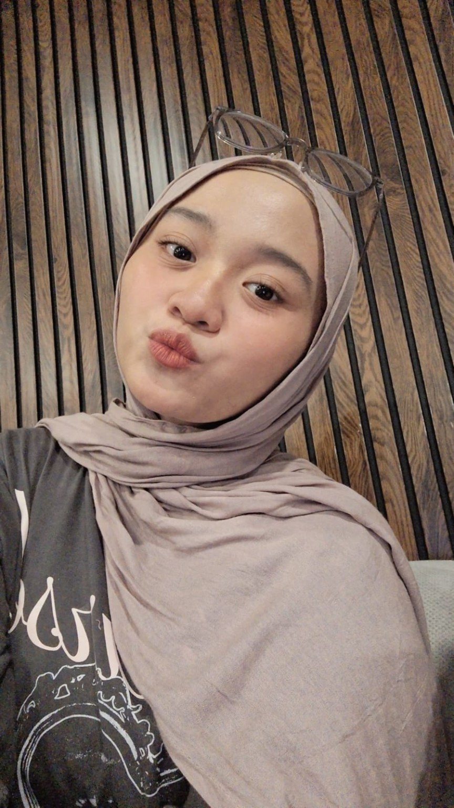

Aku punya beberapa hal yang pengin aku omongin. Aku tulis di sini supaya kamu bisa bacanya pelan-pelan, kapan pun kamu mau.
dibaca santai aja
Hal yang mau aku sampaikan
Tekan tombolnya untuk lanjut ke halaman berikutnya ♡
🌷
01 — pertama-tama
Maaf, ya, Cha.
Aku kepikiran soal obrolan kita belakangan ini. Rasanya kadang kita cuma saling tanya lagi apa, sudah makan atau belum, terus setelah itu bingung mau ngomong apa lagi.
Waktu kita telepon pun kadang malah sama-sama diam. Aku sadar itu mungkin bikin kamu merasa kita sedang jauh, meskipun sebenarnya lagi meluangkan waktu bareng.
Aku nggak mau menganggap perasaan kamu sepele. Kalau kamu merasa bosan atau kurang ditemani, aku mau dengar dan mencoba memahami.
Aku nggak berharap surat ini langsung menyelesaikan semuanya. Aku cuma mau mulai dengan jujur mengakui kalau memang ada yang perlu aku perbaiki.
☁️
02 — yang aku pahami
Aku mulai ngerti...
Aku tahu kamu nggak minta aku selalu ada setiap waktu. Kita punya kesibukan masing-masing, dan menurutku itu wajar.
Mungkin yang kamu kangenin itu obrolan yang ngalir begitu aja. Cerita hal random, saling tanya karena memang penasaran, atau tiba-tiba punya sesuatu yang pengin dibagi.
Aku juga nggak mau kamu merasa harus jadi orang yang selalu mulai obrolan. Aku pun perlu ikut usaha, bukan cuma menunggu kamu cerita.
Aku pengin lebih banyak mendengarkan dan nggak asal mengira-ngira apa yang kamu rasakan.
🧸
03 — hal kecil yang mau aku usahakan
Nggak mau cuma janji.
Aku nggak mau bilang bakal berubah kalau akhirnya cuma jadi kata-kata. Aku mau mulai dari hal sederhana yang bisa kelihatan dari sikapku.
01Lebih hadirKalau kamu cerita, aku usahakan benar-benar menyimak.
02Lebih terbukaAku juga mau berbagi cerita, bukan cuma jawab pertanyaan.
03Bikin cerita baruCari kegiatan seru supaya kita punya pengalaman baru.
04Lebih pekaBelajar bertanya dan memahami, bukan buru-buru membela diri.
05Kasih ruangKita tetap boleh punya waktu untuk diri sendiri.
06KonsistenNggak harus sempurna, tapi jangan berhenti berusaha.
📸
04 — potongan kenangan
Beberapa momen kita.
Ada beberapa foto yang pengin aku simpan di sini. Yang pertama, momen kita lagi duduk bareng. Yang kedua, si kecil yang sukses mencuri perhatian. Yang ketiga, satu foto kamu yang aku suka. Sederhana, tapi masing-masing punya ceritanya sendiri.

momen kita ♡

si paling gemas 🐾

senyum yang aku suka ♡
Nanti kalau ada cerita baru, semoga galeri kecil ini bisa nambah isinya.
🌼
05 — pelan-pelan aja
Kita coba ngobrol lagi, ya.
Aku masih pengin punya banyak cerita sama kamu. Tapi aku juga tahu semuanya nggak bisa berubah cuma karena satu surat atau satu obrolan.
Kalau ada hari ketika kita capek atau nggak tahu mau ngomong apa, nggak apa-apa. Aku cuma berharap kita tetap bisa jujur dan nggak memendam sesuatu sendirian.
Aku nggak minta kamu langsung punya jawaban setelah baca ini. Aku cuma pengin kamu tahu kalau aku dengar apa yang selama ini kamu sampaikan, dan aku mau ikut memperbaikinya.
Makasih sudah mau cerita jujur ke aku, Cha. Maaf kalau ada sikapku yang bikin kamu merasa sendirian.
Dari Yudha, buat Icha ♡
1 / 5
♡
Makasih sudah baca sampai akhir, Cha.
Itu aja yang pengin aku sampaikan. Nggak perlu buru-buru membalas, ya.